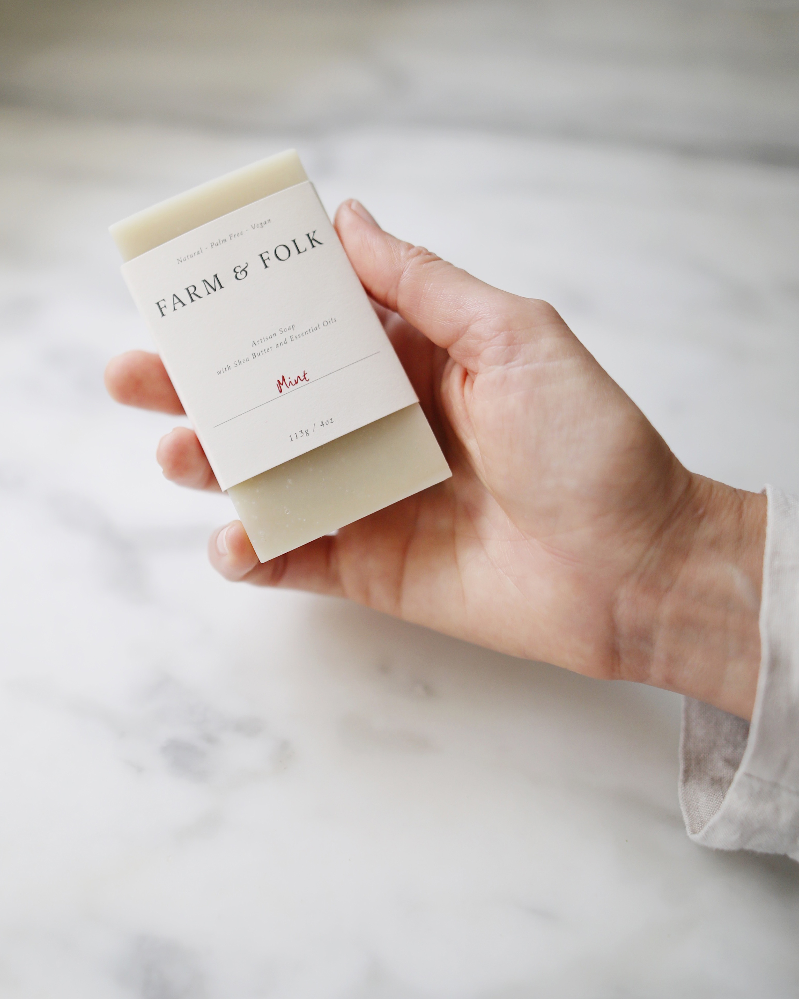
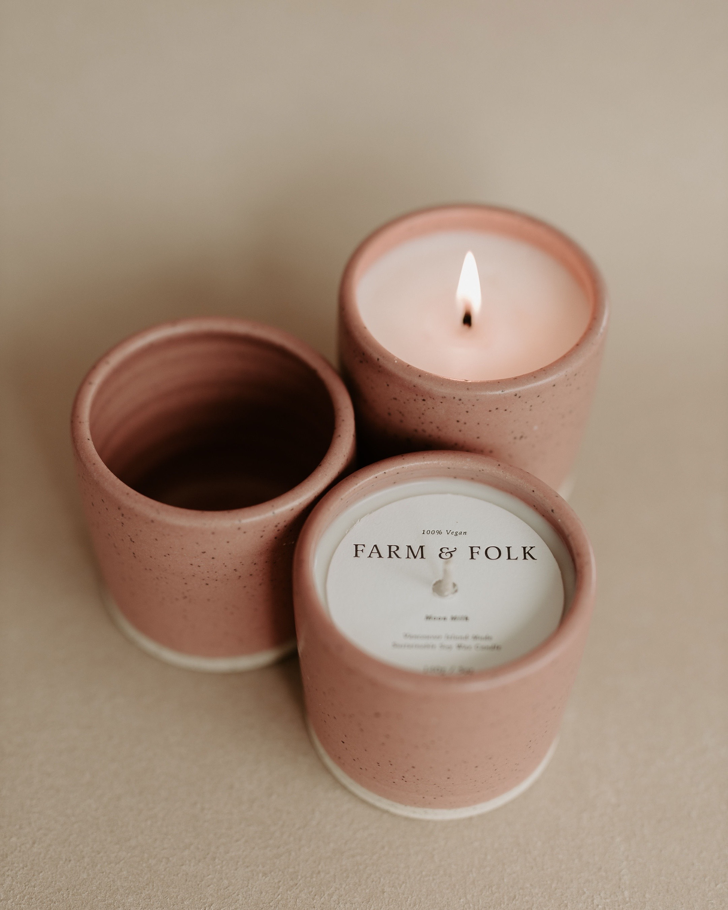
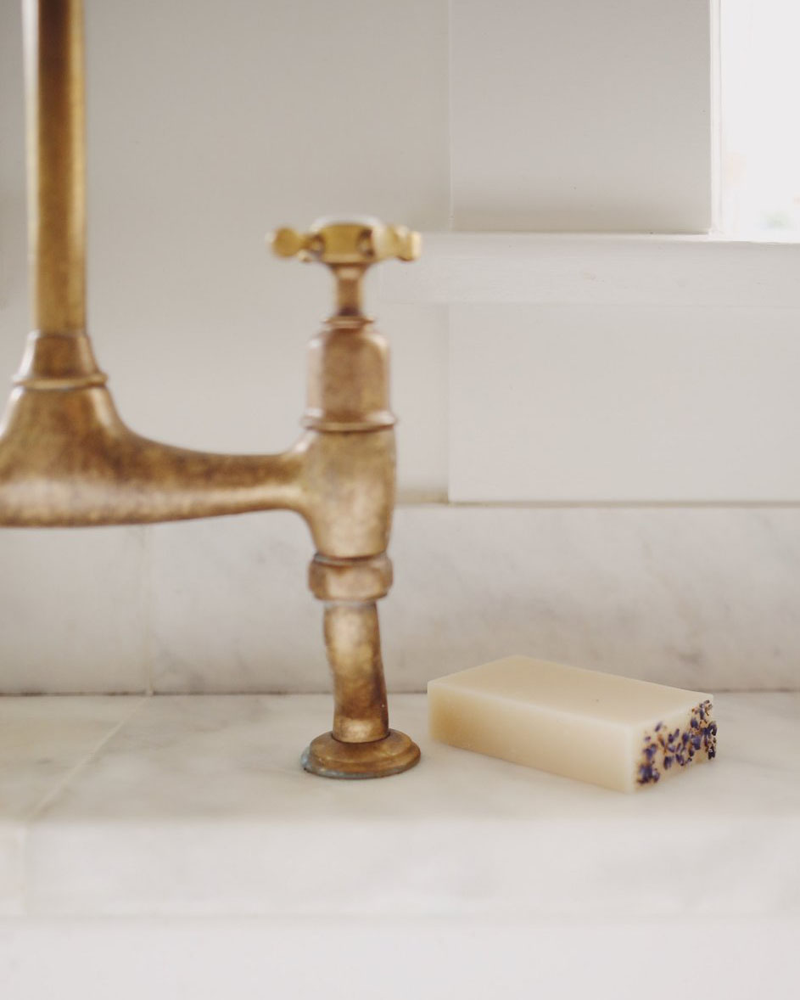
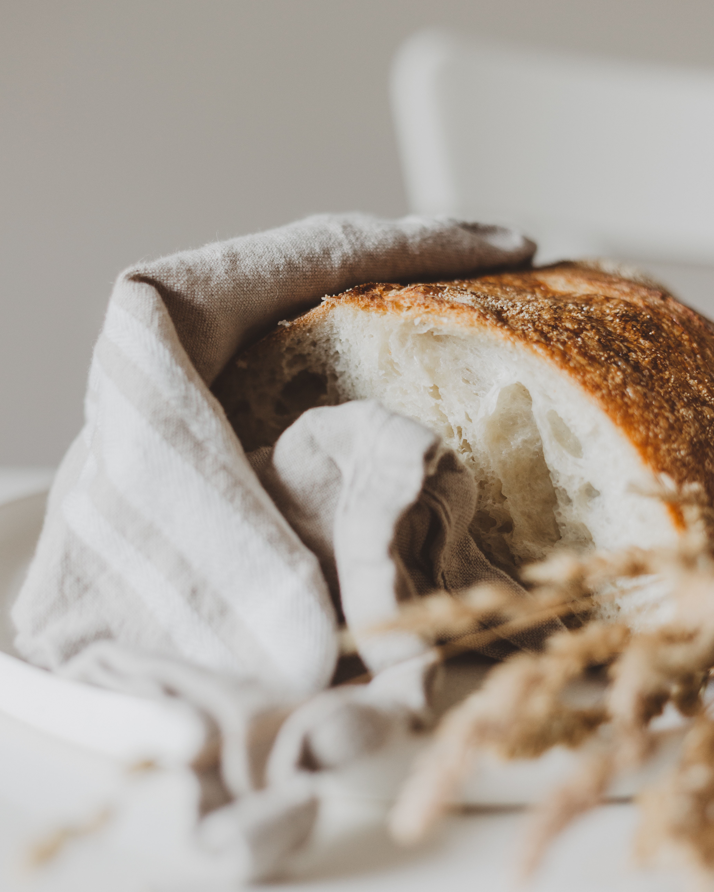

We Support Nourish Cowichan With Soap Donations
HOME
ABOUT
SHOP
SOAP QUIZ
Farm-To-Body
Handmade Artisan Soaps
Beautifully clean + effective body care products
with the finest plant-powered ingredients
SHOP NOW
Collection

Artisan Soap

Pottery Candles
Shop All
Discover Nourishing, Natural Soap

Our Story
We Believe In The Power
Of Nature To Help You Unwind
LEARN MORE
